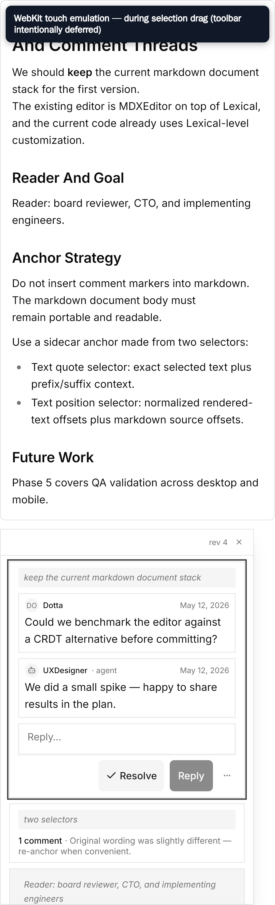
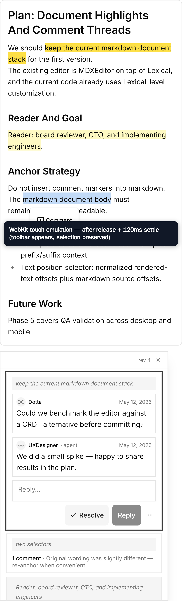

Environment: Playwright WebKit 26.0 with iPhone 13 touch/coarse-pointer emulation.
Assertion: the toolbar count is 0 during the active selection gesture and 1 after touchend plus the 120ms settle delay. The selected text remains exactly “markdown document body” in both states.
Desktop WebKit is an engine approximation; physical iOS Safari confirmation remains a separate QA gate.

